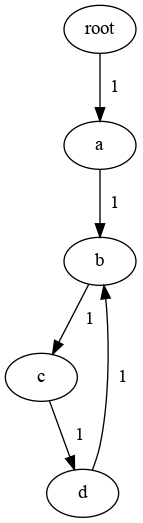

k1lib.callbacks module
callbacks module
Bare example of how this module works:
import k1lib
class CbA(k1lib.Callback):
def __init__(self):
super().__init__()
self.initialState = 3
def startBatch(self):
print("startBatch - CbA")
def startPass(self):
print("startPass - CbA")
class CbB(k1lib.Callback):
def startBatch(self):
print("startBatch - CbB")
def endLoss(self):
print("endLoss - CbB")
# initialization
cbs = k1lib.Callbacks()
cbs.add(CbA()).add(CbB())
model = lambda xb: xb + 3
lossF = lambda y, yb: y - yb
# training loop
cbs("startBatch"); xb = 6; yb = 2
cbs("startPass"); y = model(xb); cbs("endPass")
cbs("startLoss"); loss = lossF(y, yb); cbs("endLoss")
cbs("endBatch")
print(cbs.CbA) # can reference the Callback object directly
So, point is, you can define lots of Callback classes that
defines a number of checkpoint functions, like startBatch. Then,
you can create a Callbacks object that includes Callback
objects. When you do cbs("checkpoint"), this will execute
cb.checkpoint() of all the Callback objects.
Pretty much everything here is built upon this. The core training loop
has nothing to do with ML stuff. In fact, it’s just a bunch of
cbs("...") statements. Everything meaningful about the training
loop comes from different Callback classes. Advantage of this is that you
can tack on wildly different functions, have them play nicely with each
other, and remove entire complex functionalities by commenting out a
single line.
- k1lib.callbacks.callbacks.Cbs
Objectof all available callbacks. Automatically exposed, so you can do this:from k1lib.imports import * cbs = k1lib.Callbacks().add(Cbs.Beep()) cbs("endRun") # plays a beep sound
- class k1lib.callbacks.callbacks.Callback[source]
Bases:
objectRepresents a callback. Define specific functions inside to intercept certain parts of the training loop. Can access
k1lib.Learnerlike this:self.l.xb = self.l.xb[None]
This takes x batch of learner, unsqueeze it at the 0 position, then sets the x batch again.
Normally, you will define a subclass of this and define specific intercept functions, but if you want to create a throwaway callback, then do this:
Callback().withCheckpoint("startRun", lambda: print("start running"))
You can use
Cbs(automatically exposed) for a list of default Callback classes, for any particular needs.order
You can also use .order to set the order of execution of the callback. The higher, the later it gets executed. Value suggestions:
7: pre-default runs, like LossLandscape
10: default runs, like DontTrainValid
13: custom mods, like ModifyBatch
15: pre-recording mod
17: recording mods, like Profiler.memory
20: default recordings, like Loss
23: post-default recordings, like ParamFinder
25: guards, like TimeLimit, CancelOnExplosion
Just leave as default (10) if you don’t know what values to choose.
dependsOn
If you’re going to extend this class, you can also specify dependencies like this:
class CbC(k1lib.Callback): def __init__(self): super().__init__() self.dependsOn = {"Loss", "Accuracy"}
This is so that if somewhere,
Losscallback class is temporarily suspended, then CbC will be suspended also, therefore avoiding errors.Suspension
If your Callback is mainly dormant, then you can do something like this:
class CbD(k1lib.Callback): def __init__(self): super().__init__() self.suspended = True def startBatch(self): # these types of methods will only execute # if ``self.suspended = False`` pass def analyze(self): self.suspended = False # do something that sometimes call ``startBatch`` self.suspended = True cbs = k1lib.Callbacks().add(CbD()) # dormant phase: cbs("startBatch") # does not execute CbD.startBatch() # active phase cbs.CbB.analyze() # does execute CbD.startBatch()
So yeah, you can easily make every checkpoint active/dormant by changing a single variable, how convenient. See over
Callbacks.suspend()for more.- withCheckpoint(checkpoint: str, f: Callable[[Callback], None])[source]
Quickly set a checkpoint, for simple, inline-able functions
- Parameters
checkpoint – checkpoints like “startRun”
f – function that takes in the Callback itself
- class k1lib.callbacks.callbacks.Timings[source]
Bases:
objectList of checkpoint timings. Not intended to be instantiated by the end user. Used within
Callbacks, accessible viaCallbacks.timingsto record time taken to execute a single checkpoint. This is useful for profiling stuff.- property state
- class k1lib.callbacks.callbacks.Callbacks[source]
Bases:
object- property l: Learner
k1lib.Learnerobject. Will be set automatically when you setk1lib.Learner.cbsto thisCallbacks
- add(cb: Callback, name: Optional[str] = None)[source]
Adds a callback to the collection. Example:
cbs = k1lib.Callbacks() cbs.add(k1lib.Callback().withCheckpoint("startBatch", lambda self: print("here")))
If you just want to insert a simple callback with a single checkpoint, then you can do something like:
cbs.add(["startBatch", lambda _: print("here")])
- __call__(*checkpoints: List[str]) bool[source]
Calls a number of checkpoints one after another. Returns True if any of the checkpoints return anything at all
- withBasics()[source]
Adds a bunch of very basic Callbacks that’s needed for everything. Also includes Callbacks that are not necessary, but don’t slow things down
- withAdvanced()[source]
Adds advanced Callbacks that do fancy stuff, but may slow things down if not configured specifically.
- checkpointGraph(highlightCb: Optional[Union[str, Callback]] = None)
Graphs what checkpoints follows what checkpoints. Has to run at least once first. Requires graphviz package though. Example:
cbs = Callbacks() cbs("a", "b", "c", "d", "b") cbs.checkpointGraph() # returns graph object. Will display image if using notebooks
- Parameters
highlightCb – if available, will highlight the checkpoints the callback uses. Can be name/class-name/class/self of callback.
- context(*initCbs: List[Callback]) ContextManager
Add context.
Works like this:
cbs = k1lib.Callbacks().add(CbA()) # CbA is available with cbs.context(CbE(), CbF()): cbs.add(CbB()) # CbA, CbB, CbE and CbF available cbs.add(CbC()) # all 5 are available # only CbA is available
For maximum shortness, you can do this:
with k1lib.Callbacks().context(CbA()) as cbs: # Cba is available
- suspend(*cbNames: List[str]) ContextManager
Creates suspension context for specified Callbacks. Matches callbacks with their name. Works like this:
cbs = k1lib.Callbacks().add(CbA()).add(CbB()).add(CbC()) with cbs.suspend("CbA", "CbC"): pass # inside here, only CbB will be active, and its checkpoints executed # CbA, CbB and CbC are all active
See also
- suspendClasses(*classNames: List[str]) ContextManager
Like
suspend(), but matches callbacks’ class names to the given list, instead of matching names. Meaning:cbs.k1lib.Callbacks().add(Cbs.Loss()).add(Cbs.Loss()) # cbs now has 2 callbacks "Loss" and "Loss0" with cbs.suspendClasses("Loss"): pass # now both of them are suspended
- suspendEval(more: List[str] = [], less: List[str] = []) ContextManager
Same as
suspendClasses(), but suspend some default classes typical used for evaluation callbacks. Just convenience method really. Currently includes:HookModule, HookParam, ProgressBar
ParamScheduler, Loss, Accuracy, Autosave
ConfusionMatrix
- Parameters
more – include more classes to be suspended
less – exclude classes supposed to be suspended by default
confusionMatrix module
- class k1lib.callbacks.confusionMatrix.ConfusionMatrix(categories: ~typing.Optional[~typing.List[str]] = None, condF: ~typing.Callable[[~k1lib.callbacks.confusionMatrix.ConfusionMatrix], bool] = <function ConfusionMatrix.<lambda>>)[source]
Bases:
Callback- __init__(categories: ~typing.Optional[~typing.List[str]] = None, condF: ~typing.Callable[[~k1lib.callbacks.confusionMatrix.ConfusionMatrix], bool] = <function ConfusionMatrix.<lambda>>)[source]
Records what categories the network is confused the most. Expected variables in
Learner:preds: long tensor with categories id of batch before checkpoint
endLoss. Auto-included inAccFandLossNLLCross.
- Parameters
categories – optional list of category names
condF – takes in this cb’s and returns whether to record at this particular endLoss checkpoint.
core module
This is for core callbacks, that defines how everything is going to go
- class k1lib.callbacks.core.CoreNormal[source]
Bases:
CallbackJust a normal, typical feed forward pass. Deposits variables into
Learnerat checkpointinPass:y: attached result tensor after passing through model
- class k1lib.callbacks.core.CoreRNN[source]
Bases:
CallbackRNN forward pass. Expected variables from
k1lib.Learner.model:initHidden: function takes in batch size, returns init hidden tensor
Deposits variables into
Learnerat checkpointinPass, more specificallyrnnPass:y: attached result tensor after pass (
inPass), after character pass (rnnPass)
hookModule module
- class k1lib.callbacks.hookModule.HookModule(persistent: bool = False)[source]
Bases:
CallbackHooks into selected modules in the network, and execute functions like .mean(), .std(). This is fairly complicated, and I highly recommend displaying this callback in a cell for more info
- __init__(persistent: bool = False)[source]
- Parameters
persistent – whether to save results across runs. If false, then can execute .reset() to reset everything
- reset()[source]
Intended to be called by end user only, to reset everything if choose to persist results across runs.
- persist()[source]
By default, data will be erased and populated on each run. If you want the data to persist across runs, call this.
- clearHooks()
Hooks into selected modules in the network, and execute functions like .mean(), .std(). This is fairly complicated, and I highly recommend displaying this callback in a cell for more info
- css(css: str)
Hooks into selected modules in the network, and execute functions like .mean(), .std(). This is fairly complicated, and I highly recommend displaying this callback in a cell for more info
- plot(*fields: ~typing.List[str], f=<k1lib.cli.utils.iden object>)
Plots every simple (1 number saved/pass/module) fields.
- Parameters
fields – list of fields to plot. If none, then will automatically find all simple fields
- withBackwardHook(hook: Callable[[Data, Module, Tuple[Tensor], Tuple[Tensor]], None], name: Optional[str] = None)
Adds a hook to the backward pass. See
withHook()
- withForwardHook(hook: Callable[[Data, Module, Tuple[Tensor], Tuple[Tensor]], None], name: Optional[str] = None)
Adds a hook to the forward pass. See
withHook()
- withHook(hook: Callable[[Data, Module, Tuple[Tensor], Tuple[Tensor]], None], name: Optional[str] = None)
Adds a hook to both the forward and backward pass.
- Parameters
hook –
this function is expected to take in these parameters: (data, module, inp, out)
- data
the injected dependency for you to store stuff. Initially, data.max is an empty list, and you can append to it directly, like this:
data.max.append() # okay
Later on, you can do things like:
HookModule[i].forward.max
and get the data you saved from the hook.
- module
the module this function hooks into. Please refer to
torch.nn.Module.register_forward_hook()to know more.- inp
input (or grad of input) to the module
- out
output (or grad of output) to the module
name – custom name for the function for nice displaying
See also: m.withForwardHook(), m.withBackwardHook()
- withMaxRecorder()
Records max
- withMeanRecorder()
Records mean
- withMinRecorder()
Records min
- withStdRecorder()
Records standard deviation
hookParam module
limits module
- class k1lib.callbacks.limits.BatchLimit(limit: int)[source]
Bases:
CallbackCancels the epoch after executed certain number of batches
- class k1lib.callbacks.limits.EpochLimit(limit: int)[source]
Bases:
CallbackCancels the run after executed certain number of epochs
- class k1lib.callbacks.limits.TimeLimit(seconds=30)[source]
Bases:
CallbackCancels the run after a certain number of seconds have passed
- class k1lib.callbacks.limits.CancelOnExplosion(limit: float = 1000000.0)[source]
Bases:
CallbackCancels the run if any of the parameters are larger than a certain limit
- class k1lib.callbacks.limits.CancelOnHighAccuracy(accuracy: float)[source]
Bases:
CallbackCancels the run if accuracy is higher than the amount specified
- class k1lib.callbacks.limits.CancelOnOverfit(ratio: float = 1.2, alpha: float = 0.99, after: int = 10)[source]
Bases:
CallbackConvenience class that acts like
defaultdict. You can use it like a normal object:a = k1lib.Object() a.b = 3 print(a.b) # outputs "3"
__repr__()output is pretty nice too:<class '__main__.Object'>, with attrs: - b
You can instantiate it from a dict:
a = k1lib.Object.fromDict({"b": 3, "c": 4}) print(a.c) # outputs "4"
And you can specify a default value, just like defaultdict:
a = k1lib.Object().withAutoDeclare(lambda: []) a.texts.extend(["factorio", "world of warcraft"]) print(a.texts[0]) # outputs "factorio"
Warning
Default values only work with variables that don’t start with an underscore “_”.
Treating it like defaultdict is okay too:
a = k1lib.Object().withAutoDeclare(lambda: []) a["movies"].append("dune") print(a.movies[0]) # outputs "dune"
- __init__(ratio: float = 1.2, alpha: float = 0.99, after: int = 10)[source]
Cancels the run if overfit is detected.
- Parameters
ratio – Max ratio between the lowest loss and the current loss before cancelling the run
alpha – Moving average’s alpha, used for both minLoss and loss estimates
after – After how many epochs should the overfit detection be activated?
- class k1lib.callbacks.limits.DontTrain[source]
Bases:
CallbackDon’t allow the network to train at all
landscape module
- class k1lib.callbacks.landscape.Landscape(propertyF: Callable[[Learner], float], name: Optional[str] = None)[source]
Bases:
Callback- __init__(propertyF: Callable[[Learner], float], name: Optional[str] = None)[source]
Plots the landscape of the network.
- Parameters
propertyF – a function that takes in
k1lib.Learnerand outputs the desired float property
Warning
Remember to detach anything you get from
k1lib.Learnerin your function, or else you’re gonna cause a huge memory leak.
loss_accuracy module
- class k1lib.callbacks.loss_accuracy.Loss(f=<function Loss.<lambda>>)[source]
Bases:
Callback- __init__(f=<function Loss.<lambda>>)[source]
Records losses after each batch. Expected variables in
Learner:loss: single float value
- Parameters
f – optional function to get the loss from
Learnerobject
- property Landscape
Gets loss-landscape-plotting Callback. Example:
l = k1lib.Learner.sample() l.cbs.add(Cbs.Loss()) l.Loss.Landscape.plot()
- class k1lib.callbacks.loss_accuracy.Accuracy(variable: str = 'accuracy')[source]
Bases:
Callback- __init__(variable: str = 'accuracy')[source]
Records accuracies after each batch. Expected variables in
Learner:accuracy: single float value from 0 to 1
- Parameters
variable – name of variable expected to be available in Learner
- property hasAccF
paramFinder module
- class k1lib.callbacks.paramFinder.ParamFinder(tolerance: float = 10)[source]
Bases:
Callback- __init__(tolerance: float = 10)[source]
Automatically finds out the right value for a specific parameter.
- Parameters
tolerance – how much higher should the loss be to be considered a failure?
- property samples
- property value
- property lossAvgs
- plot(*args, **kwargs)
Plots loss at different param scales. Automatically
run()if hasn’t, returns ak1lib.viz.SliceablePlot.- Parameters
args – Arguments to pass through to
run()if a run is required. Just for convenience sake
profiler module
- class k1lib.callbacks.profiler.Profiler[source]
Bases:
CallbackProfiles memory, time, and computational complexity of the network. See over
k1lib.callbacks.profilersfor more details on each of these profilers- property memory: MemoryProfiler
Gets
MemoryProfiler
- property computation: ComputationProfiler
Gets
ComputationProfiler
- property time: TimeProfiler
Gets
TimeProfiler
- property io: IOProfiler
Gets
IOProfiler
progress module
- class k1lib.callbacks.progress.ProgressBar[source]
Bases:
CallbackDisplays the current progress, epoch and batch while running. Deposits variables into
Learnerat checkpointstartBatch:progress: single float from 0 to 1, guaranteed to increase monotonically
epochThroughput
remaining: estimated remaining time. Does not take into account callbacks that can potentially cancel the run prematurely
- plot(f=<k1lib.cli.utils.iden object>, perEpoch=False, _window=2)[source]
Plots detailed partial execution time profile.
- Parameters
f – optional post processing step
perEpoch – if True, normalize time per epoch, else keep it at time per run
_window – number of batches to calculate the processing rate over. Put low values (min 2) to make it crisp (and inaccurate), put high values to make it smooth (and accurate)
recorder module
- class k1lib.callbacks.recorder.Recorder[source]
Bases:
CallbackRecords xb, yb and y from a short run. No training involved. Example:
l = k1lib.Learner.sample() l.cbs.add(Cbs.Recorder()) xbs, ybs, ys = l.Recorder.record(1, 2) xbs # list of x batches passed in ybs # list of y batches passed in, "the correct label" ys # list of network's output
If you have extra metadata in your dataloader, then the recorder will return (xb, yb, metab, ys) instead:
# creating a new dataloader that yields (xb, yb, metadata) x = torch.linspace(-5, 5, 1000); meta = torch.tensor(range(1000)) dl = [x, x+2, meta] | transpose() | randomize(None) | repeatFrom() | batched() | (transpose() | (toTensor() + toTensor() + toTensor())).all() | stagger(50) l = k1lib.Learner.sample(); l.data = [dl, []] l.cbs.add(Cbs.Recorder()) xbs, ybs, metabs, ys = l.Recorder.record(1, 2)
shorts module
- class k1lib.callbacks.shorts.Autosave[source]
Bases:
CallbackAutosaves 3 versions of the network to disk
- class k1lib.callbacks.shorts.DontTrainValid[source]
Bases:
CallbackIf is not training, then don’t run m.backward() and opt.step(). The core training loop in k1lib.Learner don’t specifically do this, cause there may be some weird cases where you want to also train valid.
- class k1lib.callbacks.shorts.ModifyLoss(f)[source]
Bases:
CallbackExpected f to take in 1 float and return 1 float.
- class k1lib.callbacks.shorts.DType(dtype)[source]
Bases:
CallbackMoves batch and model to a specified data type
- class k1lib.callbacks.shorts.InspectBatch(f: callable)[source]
Bases:
CallbackExpected f to take in 2 tensors.
- class k1lib.callbacks.shorts.ModifyBatch(f)[source]
Bases:
CallbackModifies xb and yb on the fly. Expected f to take in 2 tensors and return 2 tensors.
- class k1lib.callbacks.shorts.InspectOutput(f)[source]
Bases:
CallbackExpected f to take in 1 tensor.